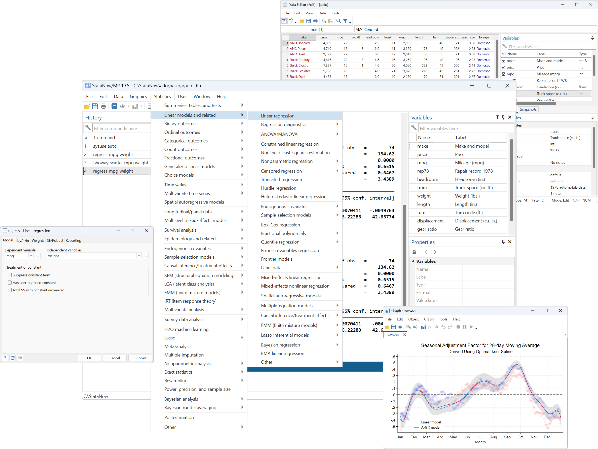
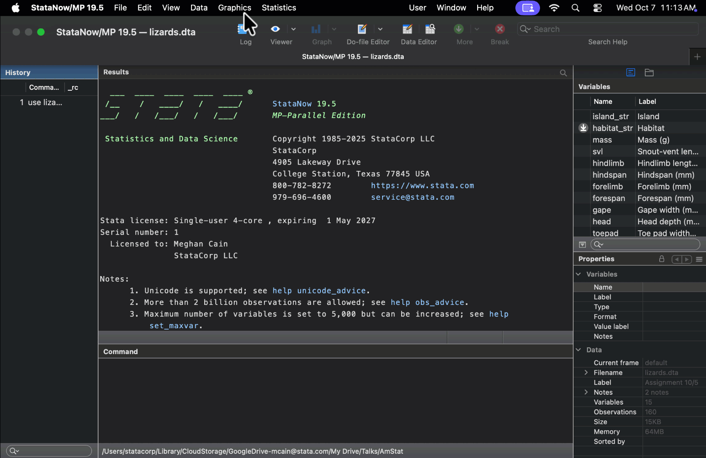

Stata is a complete, integrated software package available for download and use on PC, Mac, and Linux. It provides all the tools you need for
Data manipulation
Visualization
Statistics
Automated reporting
For over 40 years, it has been a trusted standard in research and industry.
We are known for being an easy-to-use software for rigorous research. Our 19,000+ page documentation provides all the methods and formulas we use, as well as worked-through examples including example datasets and interpretation.

Why teach with Stata

Stata is easy to learn. Point-and-click to anything or use our consistent and intuitive syntax:
. histogram x
. scatter y x
. regress y x
Free online learning resources. Access our comprehensive documentation, webinars, YouTube videos, tutorials, and more.
Integrated version control. Stata's integrated version control ensures that the commands you teach today will produce the same results in the future.
Industry-ready skills. When students learn Stata, they are building resume-ready skills used by economists, epidemiologists, political scientists, and public health researchers.
How to get Stata
K-12 teachers can request a free one-year Stata license.